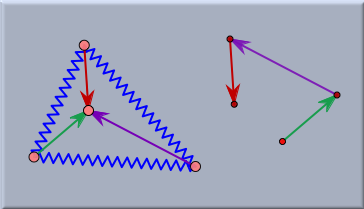
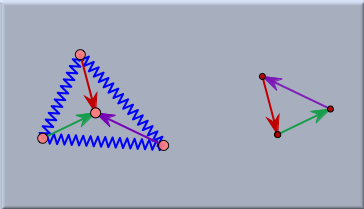
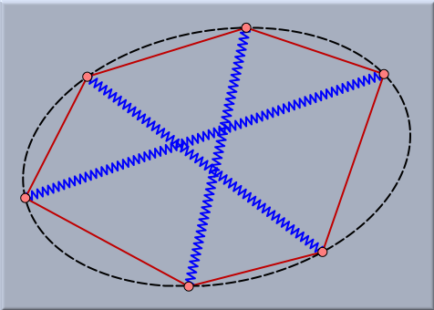
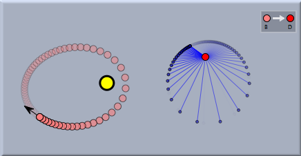
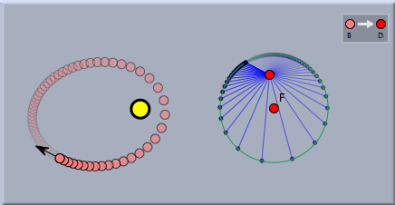

Geometry and CindyLab
In a sense this section is not much more than a reminder for the user of Cinderella. One should always be aware of the fact that in CindyLab all masses are still geometric points and all that springs, bouncers and floors are lines and segments. Thus it is always possible to enhance CindyLab experiments by geometric constructions. These geometric constructions can sometimes be extremely helpful in order to analyze the exact meaning of an experiment. We will illustrate this by three small examples.
Example 1: Equilibrium Condition for Forces
If a physical situation is in an equilibrium situation then none of the masses is accelerated. This however implies that in such a case at any mass there are no forces present. This in turn implies that if there are several sources of forces affecting at a particle, the all these forces have to sum up to zero. The experiment below exemplifies this situation for a simple network of rubber bands and springs. There a triangle of (blue) springs is constructed. All vertices of the triangle are joined to a central particle by rubber bands. In the start situation the lengths and directions of the rubber bands may be arbitrary. However, if one lets the System come to an equilibrium situation (by starting the simulation and adding some friction) then the forces caused by the rubber bands at the inner vertex have to cancel out. If all rubber bands have identical spring constants, then this implies that the three segments representing the rubber bands can be shifted parallel to form a triangle (sum of forces equals zero).
 |  |
|
| Situation before start | Situation in equilibrium |
This can simply be tested by a small auxiliary construction that concatenates parallel shifts of the three segments (left part of picture). In the start situation one observes that this chain of three arrows does not necessarily have to meet. The second picture shows the equilibrium situation in which the three edges automatically form a perfect triangle.
Sometimes very surprising and interesting relations occur on equilibrium configurations. For instance, the next picture shows the situation of three springs that are surrounded by six rubber bands. The rubber bands may have arbitrary spring constants. In the equilibrium situation the six vertices of the construction will automatically lie on a conic.
 |
| A surprising equilibrium condition |
Example 2: Planet Movement
There is an amazing and not very well known geometric property of planet movement in a two-body system. As already mentioned, a planet orbiting around a sun will describe the trace of an ellipse. If we consider the velocity of the planet it is fast whenever the planet is close to the sun and slow whenever it is far away. It also changes its direction all the time during the movement. In Cinderella it is easy to explicitly study the path of the velocity vector. For this one first adds a Sun and a particle with Velocity. If one starts the simulation the particle will move along a Kepler ellipse. Then one adds a free point and defines a Translation from the planet to this point. Now one can easily translate the velocity vector to this and obtain a picture of the isolated behavior of the velocity vector.
 |
| The trace of the velocity vector |
Viewing the trace of the velocity vector one might conjecture that the trace is circular. It is easy to at least visually verify this conjecture by simply adding a free circle to the drawing and moving it while the animation is running to a position in which it matches the trace of the velocity vector. The picture below shows how nicely it matches up.
 |
| The trace is circular |
Example 3: Forces at the Golden Gate Bridge
The picture below shows an example that was already considered in the section on Gravity. Here a background image of the Golden Gate Bridge is loaded. With the use of CindyLab a physics simulation is constructed that models the distribution of forces in the cables of the bridge. Cinderella is used to straighten out the perspective of the photograph. This can be done by using a Projective Transformation that maps the situation in the physics simulation to the situation in the picture. Adjusting the gravity to the correct value shows that this situation exactly resembles the situation on the supporting cables of the bridge.
 |
| An analysis of the Golden Gate Bridge |
Page last modified on Monday 05 of September, 2011 [08:57:54 UTC].
The original document is available at
http://doc.cinderella.de/tiki-index.php?page=Geometry%20and%20CindyLab